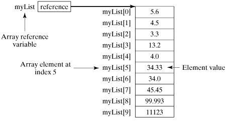

Java Arrays
Java provides a data structure, the array,
which stores a fixed-size sequential collection of elements of the same type.
An array is used to store a collection of data, but it is often more useful to
think of an array as a collection of variables of the same type.
Instead of declaring individual
variables, such as number0, number1, ..., and number99, you declare one array
variable such as numbers and use numbers[0], numbers[1], and ..., numbers[99]
to represent individual variables.
This tutorial introduces how to
declare array variables, create arrays, and process arrays using indexed
variables.
Declaring Array Variables:
To use an array in a program, you
must declare a variable to reference the array, and you must specify the type
of array the variable can reference. Here is the syntax for declaring an array
variable:
dataType[] arrayRefVar; // preferred way. or dataType arrayRefVar[]; // works but not preferred way.
Example:
The following code snippets are
examples of this syntax:
double[] myList; // preferred way. or double myList[]; // works but not preferred way.
Creating Arrays:
You can create an array by using the
new operator with the following syntax:
arrayRefVar = new dataType[arraySize];
The above statement does two things:
Declaring an array variable,
creating an array, and assigning the reference of the array to the variable can
be combined in one statement, as shown below:
dataType[] arrayRefVar = new dataType[arraySize];
Alternatively you can create arrays
as follows:
dataType[] arrayRefVar = {value0, value1, ..., valuek};
The array elements are accessed
through the index. Array indices are 0-based; that is, they start from 0
to arrayRefVar.length-1.
Example:
Following statement declares an
array variable, myList, creates an array of 10
elements of double type and assigns its reference to myList:
double[] myList = new double[10];
Following picture represents array myList. Here, myList holds ten
double values and the indices are from 0 to 9.

Processing Arrays:
When processing array elements, we
often use either for loop or foreach loop because all
of the elements in an array are of the same type and the size of the array is
known.
Example:
Here is a complete example of
showing how to create, initialize and process arrays:
public class TestArray { public static void main(String[] args) { double[] myList = {1.9, 2.9, 3.4, 3.5}; // Print all the array elements for (int i = 0; i < myList.length; i++) { System.out.println(myList[i] + " "); } // Summing all elements double total = 0; for (int i = 0; i < myList.length; i++) { total += myList[i]; } System.out.println("Total is " + total); // Finding the largest element double max = myList[0]; for (int i = 1; i < myList.length; i++) { if (myList[i] > max) max = myList[i]; } System.out.println("Max is " + max); } }
This would produce the following
result:
1.9
2.9
3.4
3.5
Total is 11.7
Max is 3.5
The foreach Loops:
JDK 1.5 introduced a new for loop
known as foreach loop or enhanced for loop, which
enables you to traverse the complete array sequentially without using an index
variable.
Example:
The following code displays all the
elements in the array myList:
public class TestArray { public static void main(String[] args) { double[] myList = {1.9, 2.9, 3.4, 3.5}; // Print all the array elements for (double element: myList) { System.out.println(element); } } }
This would produce the following
result:
1.9
2.9
3.4
3.5
Passing Arrays to Methods:
Just as you can pass primitive type
values to methods, you can also pass arrays to methods. For example, the
following method displays the elements in an int
array:
public class TestArray { public static void main(String[] args) { double[] myList = {1.9, 2.9, 3.4, 3.5}; // Print all the array elements for (double element: myList) { System.out.println(element); } } }
You can invoke it by passing an
array. For example, the following statement invokes the printArray
method to display 3, 1, 2, 6, 4, and 2:
Returning an Array from a Method:
A method may also return an array.
For example, the method shown below returns an array that is the reversal of
another array:
public static int[] reverse(int[] list) { int[] result = new int[list.length]; for (int i = 0, j = result.length - 1; i < list.length; i++, j--) { result[j] = list[i]; } return result; }
The Arrays Class:
The java.util.Arrays
class contains various static methods for sorting and searching arrays,
comparing arrays, and filling array elements. These methods are overloaded for
all primitive types.
|
SN |
Methods
with Description |
|
1 |
public static int binarySearch(Object[]
a, Object key) |
|
2 |
public static boolean equals(long[] a,
long[] a2) |
|
3 |
public static void fill(int[] a, int val) |
|
4 |
public static void sort(Object[] a) |